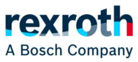

Xuất xứ: Đức
Bosch Rexroth là thương hiệu thủy lực công nghiệp hàng đầu thế giới, thuộc tập đoàn Bosch. Van điện từ 4WE, van an toàn DBDS, bơm piston A10VSO và motor A2FM của Rexroth là cấu hình quen thuộc trên máy ép, máy cán, trạm thủy lực, máy công trình và thiết bị nâng hạ tại Việt Nam.
Fast Group là đại lý phân phối hàng Bosch Rexroth chính hãng — cung cấp van, bơm, motor, bộ gioăng và phụ kiện thủy lực Rexroth cho bảo trì thay thế và dự án mới, kèm chứng từ nguồn gốc rõ ràng.
Mã Rexroth dài nhưng có quy tắc: 4WE6D6X/EG24N9K4 là van điện từ 4 cửa, cỡ 6, sơ đồ con trượt D, series 6X, coil 24 V DC, đầu nối K4. Fast Group giải mã chuỗi này từ nhãn cũ để tránh nhầm sơ đồ con trượt hoặc điện áp.
Tra cứu trên catalog Bosch Rexroth trên hydraulic.com.vn — part number, hình ảnh, tài liệu PDF cho van, bơm, motor và phụ kiện thủy lực.
Các nhóm được hỏi nhiều nhất: van điện từ con trượt 4WE với hơn 6.000 mã và van tỉ lệ điều hướng Rexroth.
Rexroth bắt nguồn từ xưởng búa rèn của gia đình Rexroth tại Lohr am Main (Đức) năm 1795, sau phát triển thành nhà sản xuất thiết bị thủy lực. Năm 2001, Rexroth hợp nhất với mảng tự động hóa của Bosch, hình thành Bosch Rexroth AG — công ty con thuộc tập đoàn Bosch.
Ngày nay Bosch Rexroth cung cấp thủy lực công nghiệp và di động, truyền động điện, điều khiển chuyển động và công nghệ tuyến tính cho máy móc toàn cầu.
Van là nhóm Rexroth được thay thế nhiều nhất. 4WE là van điện từ con trượt theo chuẩn lắp ISO 4401, các cỡ NG6, NG10; 4WRA/4WREE là van tỉ lệ; DBDS/DBW van an toàn; DR van giảm áp; van logic và cartridge cho khối manifold.
Khi thay 4WE, ba thông số quyết định là cỡ van, ký hiệu sơ đồ con trượt (D, E, J, G…) và điện áp coil.
Coil và bộ gioăng Rexroth có thể đặt riêng — thường rẻ và nhanh hơn thay nguyên van khi chỉ cháy coil hoặc rò dầu.
Van tỉ lệ cần đi đúng bộ khuếch đại (valve amplifier); nên gửi cả mã van và mã card điều khiển.
| Nhóm | Dòng tiêu biểu | Số mã trên catalog |
|---|---|---|
| Van điện từ con trượt | 4WE6, 4WE10, 4WEH | 6.110 |
| Van an toàn | DBDS, DBW, DB | 2.815 |
| Van tỉ lệ điều hướng | 4WRA, 4WREE, 4WRPE | 1.962 |
| Van giảm áp | DR, DRE | 386 |
| Van cartridge vặn ren | Screw-in cartridge | 738 |
| Bộ gioăng (seal kit) | Theo từng series van, bơm | 906 |
Tra theo cỡ và sơ đồ con trượt tại nhóm van an toàn Rexroth; phụ tùng xem danh mục bộ gioăng Rexroth.
Bơm piston hướng trục A10VSO là trái tim của nhiều trạm thủy lực công nghiệp; A4VSO cho công suất lớn. Bơm cánh gạt PV7, bơm bánh răng trong PGH và bánh răng ngoài AZPF dùng cho máy ép, máy công cụ. Motor A2FM, A6VM phổ biến trên máy công trình và tời.
Mã bơm chứa cỡ lưu lượng, kiểu điều khiển (DR, DFR, DFLR), chiều quay, kiểu trục và mặt bích — thiếu một ký tự là không lắp được hoặc chạy sai.
Ví dụ A10VSO 45 DFR1/31R-PPA12N00: cỡ 45 cm³/vòng, điều khiển áp suất – lưu lượng DFR, series 31, quay phải.
Khi bơm cũ đã ngừng sản xuất, Rexroth thường có series kế nhiệm cùng kích thước lắp.
| Nhóm | Dòng tiêu biểu | Số mã trên catalog |
|---|---|---|
| Bơm cánh gạt | PV7, PVV | 397 |
| Motor piston hướng trục | A2FM, A6VM | 274 |
| Bơm bánh răng | AZPF, AZPG | 260 |
| Bơm bánh răng trong | PGH, PGF | 192 |
| Bơm piston hướng trục | A10VSO, A4VSO | 98 |
Chọn theo lưu lượng và kiểu điều khiển tại nhóm bơm piston hướng trục Rexroth; bơm cánh gạt xem danh mục bơm cánh gạt Rexroth.
4WE6D và 4WE6E cùng kích thước nhưng đường dầu ở vị trí giữa khác nhau hoàn toàn. Ký hiệu con trượt phải khớp chính xác.
Series (ví dụ 6X, 7X) ảnh hưởng tới phụ tùng và đôi khi kích thước. Gửi đủ chuỗi mã trên nhãn, gồm cả phần sau dấu “/”.
Coil 24 V DC hay 230 V AC, đầu nối K4 hay khác — ghi ở cuối mã van. Sai điện áp coil sẽ cháy coil ngay khi lắp.
Cùng cỡ bơm nhưng chiều quay (R/L), kiểu trục và mặt bích khác nhau. Luôn gửi mã đầy đủ hoặc ảnh nhãn bơm.
Fast Group là đại lý phân phối hàng Bosch Rexroth chính hãng, ưu tiên nguồn cung rõ ràng và chứng từ đầy đủ. Tùy yêu cầu, lô hàng đi kèm:
Nhận danh sách van, bơm, coil, bộ gioăng của từng trạm thủy lực; đề xuất đặt phụ tùng thay vì thay nguyên cụm khi phù hợp.
Rà soát BOM thủy lực, đánh dấu mã ngừng sản xuất và đề xuất series thay thế. Hệ thủy lực dùng kèm lọc dầu HYDAC? Xem trang HYDAC của Fast Group.
Có. Fast Group là đại lý phân phối hàng Bosch Rexroth chính hãng, cung cấp van, bơm, motor và phụ tùng kèm chứng từ nguồn gốc rõ ràng.
Được. Gửi đủ chuỗi mã trên nhãn (gồm series, điện áp coil, đầu nối), Fast Group báo giá đúng cấu hình.
Thường không. Coil Rexroth đặt riêng theo điện áp và kiểu đầu nối; thay coil nhanh và tiết kiệm hơn.
Rexroth thường có series kế nhiệm cùng kích thước lắp. Fast Group đối chiếu mã đầy đủ để đề xuất bơm thay thế phù hợp.
Van lắp theo chuẩn ISO 4401 cùng cỡ (NG6, NG10) có kích thước mặt lắp giống nhau; cần đối chiếu sơ đồ con trượt, lưu lượng và áp làm việc.
Tùy mã và số lượng; Fast Group báo thời gian giao cụ thể trong từng báo giá.
Gửi mã van, bơm, motor hoặc ảnh nhãn — Fast Group tra mã Rexroth và báo giá hàng chính hãng kèm chứng từ.